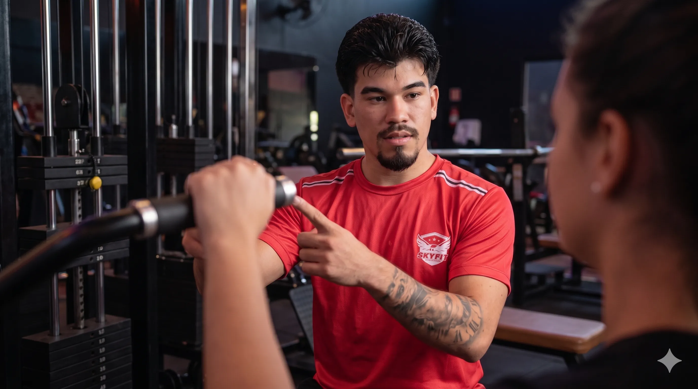
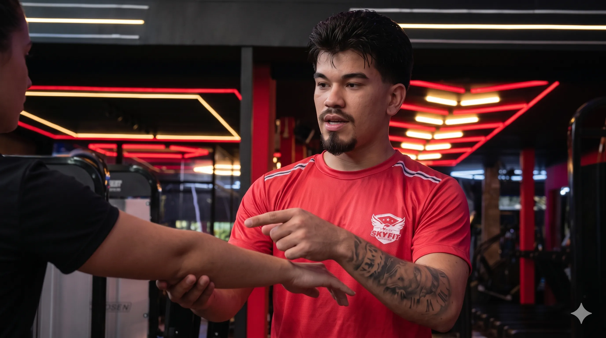

Evolução Real com Segurança
Mais que um treino, um acompanhamento humano e próximo para transformar corpo e mente. Esqueça o clichê fitness, descubra a constância com direção.
Caio Félix
Treinador Especialista

Orientação Real
Correção e acompanhamento
Sua rotina
levada a sério.
Seu resultado construído de perto.
Aqui não existe treino de gaveta. Entendemos o seu momento atual e criamos um caminho seguro, totalmente adaptado para a sua realidade. O foco é fazer você evoluir com saúde, constância e sem extremismos.
Mapeamento Individual
Análise profunda da sua rotina, histórico, limitações físicas e objetivos reais.
Prescrição Adaptada
Treinos elaborados sob medida para o seu corpo, com foco em execução correta e segurança total.
Acompanhamento Próximo
Suporte constante para tirar dúvidas, corrigir movimentos, ajustar a rota e garantir que você não desista.
Acompanhamento
real.
Em qualquer lugar.
Ter um treinador online não significa receber uma planilha e ser esquecido. É ter alguém analisando sua evolução de perto, ajustando seus passos e garantindo que você treine com total segurança e constância.
Mapeamento Inicial
Formulário detalhado para entender sua rotina, dores e objetivos reais.
Treino 100% Individual
Prescrição feita sob medida, respeitando seu momento e seu corpo.
Ajustes Constantes
Renovação e adaptação do treino a cada ciclo de evolução.
Suporte para Dúvidas
Canal direto para corrigir movimentos e relatar dificuldades.
Mensagem de Caio
"E aí, como foi o treino de hoje? Me envia o vídeo da execução!"

Atenção em tempo real
Execução perfeita, repetição por repetição.
Treine com
confiança.
Alguém guiando você.
O atendimento presencial é para quem busca muito mais do que apenas ter acesso aos aparelhos. É ter a segurança de ser corrigido na hora, entender o propósito de cada movimento e ter atenção exclusiva para evoluir sem riscos.
Correção e Segurança
Explicação clara da postura e ajustes biomecânicos imediatos.
Atenção Individualizada
Um olhar exclusivo totalmente voltado para o seu momento de treino.
Sky Fit e Academias de Breves
Atendimento presencial disponível na Sky Fit e nas demais academias da cidade.
Muito além de
um
treino genérico.
Foco em saúde
e
segurança
Biomecânica perfeita para prevenir lesões e garantir longevidade no esporte.
Correção
e
atenção real
Acompanhamento minucioso em tempo real. Eu vejo cada movimento que você faz.
Treino individualizado de verdade
Esqueça as fichas de gaveta. Seu corpo é único e seu treino também deve ser.
Evolução com
constância,
sem promessas vazias
Resultados reais e sustentáveis construídos com disciplina e método validado.
Muito além de
um
treino genérico.
Treino
individualizado
de
verdade
Esqueça as fichas de gaveta. Seu corpo é único e seu treino também deve ser. Planejamento estratégico baseado na sua biomecânica, limitações e objetivos reais.
Correção e
atenção real
Acompanhamento minucioso em tempo real. Eu vejo cada movimento que você faz.
Foco em saúde
e segurança
Biomecânica perfeita para prevenir lesões e garantir longevidade no esporte.
Evolução com
constância,
sem promessas vazias
Resultados reais e sustentáveis construídos com disciplina e método validado, não com milagres de 30 dias.
A saúde levada a sério,
na
prática e na pele.
A forma como eu oriento meus alunos não nasce apenas de artigos científicos ou da busca cega por estética. Ela é fundamentada por uma vivência real com a fragilidade e a força do corpo humano.
Após enfrentar uma pericardite grave que evoluiu para um infarto, o processo de recuperação me ensinou o verdadeiro peso da consciência corporal. A musculação, antes sinônimo de performance extrema, tornou-se a ferramenta vital para minha reabilitação e saúde plena.
"Hoje eu acompanho cada aluno com ainda mais consciência porque sei, na prática, o valor de cuidar do corpo com responsabilidade."
Respeito ao Corpo
Treino estruturado para evoluir sem ultrapassar limites da segurança.
Saúde como Base
A estética é consequência direta de um organismo funcional e saudável.
Empatia Real
Acompanhamento desenhado por quem entende de dor, limite e processo.
O acompanhamento que você
sente
na prática.
Seu
recomeço com
segurança
e
atenção real.
Sem treinos genéricos e sem promessas vazias. Fale diretamente comigo pelo WhatsApp para entendermos a sua realidade. É simples, sem compromisso e totalmente focado em você.